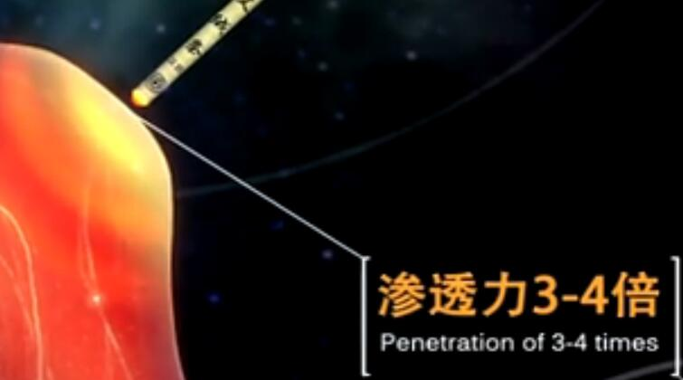

一、怎么艾灸后就上火了呢?
是的，艾灸后常会出现类似上火的现象，最近也有很多灸友反应这个情况，而需要提醒大家的是，只要你艾灸取穴和方法是对的(每次都兼顾灸了腿部)，那么这就多半属于正邪交战的表现，是正常现象，不用过多担心!
大多数人艾灸上火是因为体内病邪盘踞，於堵了阳气通行的经络，而阳气得不到疏导和传输，就会出现类似上火的现象，我们要做的是——坚持艾灸，以祛除病邪，兼顾四肢穴位，以疏导阳气。
很多人不知道的是，我们人体藏有降火穴，艾灸也能降火气!在清热穴位上按摩、拔罐、刮痧甚至艾灸，可达到平衡阴阳、清热泻火、凉血解毒的作用。
二、艾灸上火后如何应对?
①控制灸量：降低艾灸温度，艾灸盒灸的话可以用毛巾盖着，悬灸可以离皮肤更远点;减少艾灸的时间，比如原来每穴是灸20分钟，那么现在就灸15分钟。
②艾灸“降火穴”：降火穴下文会详细介绍，并且，除了艾灸的刺激方式，按摩、刮痧、拔罐也是可以的。
③引火下行：上半身部位的穴位少灸，然后八髎、足三里、涌泉从上到下的艾灸，打通中间的障碍并引火下行，尤其是多灸腿部。艾灸半小时后可用艾叶或盐水泡脚。
④灸前灸后喝温水：可以灸前灸后喝杯热水，还可以取麦冬、熟地适量各约15g煮水，灸前喝100毫升。
⑤注意饮食：平时要注意劳逸结合，少吃辛辣煎炸等热性食品。
三、人体藏有“降火穴”!
所谓的“降火穴”，其实就是指具有清热泻火、凉血解毒作用的穴位，一般用于调理热病高热、脏腑郁热、痛肿疮毒等各种里热证。
1、清心热穴
小海：屈肘，当尺骨鹰嘴与肱骨内上髁之间凹陷处。
曲泽：位于肘横纹中，当肱二头肌腱的尺侧缘。
2、清肺热穴
尺泽：在肘横纹中，肱二头肌腱桡侧凹陷处，微屈肘取穴。
鱼际：在手拇指本节(第1掌指关节)后凹陷处，约当第1掌骨中点桡侧，赤白肉际处。
3、清肠胃热穴
曲池：人体曲池穴位于肘横纹外侧端，屈肘，当尺泽穴与肱骨外上髁连线中点。
合谷：即“虎口”，在手背，第1、2掌骨间，当第二掌骨桡侧的中点处。
内庭：足背第2、第3趾间,趾蹼缘后方赤白肉际处。
4、清肝胆热穴
阳陵泉：在小腿外侧，当腓骨头前下方凹陷处。
太冲穴：在行间上二寸的凹陷中。(它能在怒发冲关时泻火入眠;也能在头晕脑胀时降压气爽;在有气无力时补足血气;能在月经不调时调理周到。)
行间穴：第一、二脚趾缝纹端。(该穴最善治头面之火，例如目赤肿疼、面热鼻血、心里烦热、燥咳失眠，酒精脂肪肝。故称“泻行间火而热自清”。)
5、清三焦热穴
外关：腕背侧远端横纹上2寸，尺骨与桡骨间隙中点。
支沟：位于前臂背侧，当阳池与肘尖的连线上，腕背横纹上3寸，尺骨与桡骨之间。
6、清热解毒穴
耳尖、八邪、八风(此三穴还可用三棱针点刺放血，血腥但有效)
涌泉穴：位于足底部，蜷足时足前部凹陷处，约当足底第2、3跖趾缝纹头端与足跟连线的前1/3与后2/3交点上。
此外，如果你嫌找清热穴位麻烦，不妨在大椎处艾灸或者刮痧，同样可以取到去火的作用!操作方法很简单，在大椎涂上润滑油，用刮痧板在大椎处用力快速刮几下，出痧后，等10分钟痧退之后可继续刮。
四、“上火”症状大盘点!
心火
夏季多发!分虚实两种，虚火表现为低热、盗汗、心烦、口干等;实火表现为反复口腔溃疡、牙龈肿痛、口干、小便短赤、心烦易怒等。
肺火
主要表现为干咳少痰、痰中带血、咽疼音哑、潮热盗汗等。
胃火
分虚实两种，虚火表现为轻微咳嗽、饮食量少、便秘、腹胀、舌红、少苔;实火表现为上腹不适、口干口苦、大便干硬、舌苔黄腻。
肝火
我们常称一些情绪容易激动的人为“肝火大”。其实，一般俗称为“肝火大”的体质还有下列症状：口干舌燥、口苦、口臭、头痛、头晕、眼干、睡眠不稳定、身体闷热、舌苔增厚等。
肾火
主要表现为头晕目眩、耳鸣耳聋、发脱齿摇、睡眠不安、五心烦热、形体消瘦、腰腿酸痛等。
五、为什么艾灸也能祛火气?
上火其实就是人体阴阳失衡后出现的内热证候，具体症状如眼睛红肿、口角糜烂、尿黄、牙痛、咽喉痛等。在夏季炎热时节及连绵湿热天气时更易发生。
人体“阴阳”的升降是有其固定的规律的，元气逐渐充足了，“阴阳”就必定按照其规律运行，该升的就自然会升，该降的就自然会降，也就是说，等寒邪被驱除以后，“上火”的症状就自然会消失。
艾火通过穴位的作用，激发了真元的功能，真元又借助艾火的力量去除寒邪，一旦寒邪被驱净，真元就会恢复“藏而不泄”的功能，将散在外面的热量收回来，
根本就不会出现继续上火或或发烧的情况(对物体越加热，物体的温度就会越高，这是自然界的物理现象)，而人体则不然，如果寒邪已去，发热的状况就会自动消除。
最后要说的是：最上乘的去火方法还是清淡饮食以及宁静清心，正所谓心静自然凉，只有心如止水，才能真正的压下满身的火气!处于淡泊宁静的状态，纵然火烧眉头也不急。
原文出处：http://aiyijiu.github.io/article/238.html 更多艾灸资讯尽在艾易灸艾灸网！